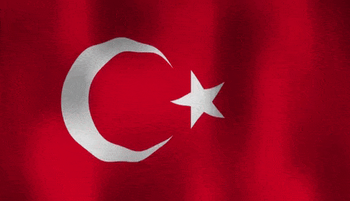
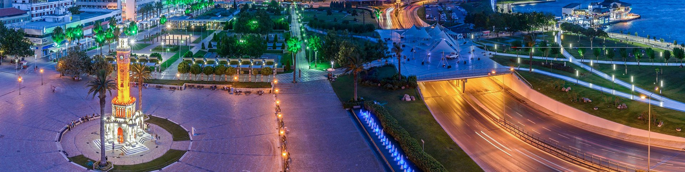

Turkey

Geographically, the Republic of Turkey is a bridge between Europe and Asia. Due to its location, surrounded by sea on three sides, Turkey has always been the center of great trade, silk and spice routes. Today, even in the most inaccessible or isolated corners, one can easily feel and see the traces of different cultures. The Republic was founded by Mustafa Kemal Atatürk in 1923 which marked the end of the long reign of the Ottoman Empire. Since then, Turkey has developed into a modern, democratic state, but at the same time, careful measures ensured that culture and traditions continue to live and evolve. Turkey is currently a candidate for membership of the European Union. Turkey is a country of diverse cultures, beliefs, ideas, nature and history. This diversity is reflected in the landscape which is the life support and habitat for 70 million people. The Turkish landscape encompasses a vast variety of geographical zones. This landscape has the combined characteristics of three continents of the world: Europe, Africa and Asia. Between 2000 B.C. and A.D.1500, Anatolia was the center of world civilization manifested in the ruins and monuments which adorn today’s landscape. Turkey is also known for an abundance and diversity of handicrafts, cuisine, music, customs and traditions due to its rich flora, fauna and regional differentiation as well as its imperial legacy.handicrafts, cuisine, music, customs and traditions due to its rich flora, fauna and regional differentiation as well as its imperial legacy. Turkey’s focal points are its three largest cities: İstanbul, Ankara and İzmir which have become major urban centers by their historical heritage as well as modern design. Mythology and history are intermingled in Antalya on the Mediterranean coast, together with its beautiful beaches and seaside resorts. Myra (now called Demre), near Antalya, is where St. Nicholas is buried. “Cappadocia,” named during the Roman Empire, was a well-known religious center during the Byzantine Empire. Even today cave dwellings in rock cones and village houses of volcanic tuff merge harmoniously into the landscape. The Black Sea region is renowned for its mountainous green landscape. The 14th-century “Sumela Monastery” (Virgin Mary) is perched on a cliff-face 270 meters above a deep gorge. Nemrut Mountain in Adıyaman is where the tomb of King Antiokhos I was built two thousand years ago, surrounded by huge stoneheads of gods. In the east, Mount Ararat, where Noah’s ark is believed to be buried, rises to a height of 5,165 meters. On the ancient Silk Road, near Kars, lie the ruins of the medieval city Ani. These are just a few of the characteristics and excitements of Turkey. In general, Turkey fascinates, astonishes and informs. Perhaps the most thrilling aspect of visiting Turkey is to become an active participant in this landscape.
İzmir
Located on the shores of the Aegean Sea, west of the Anatolian Peninsula, İzmir is the third-largest city in Turkey. It is one of the livable cities thanks to its large share in industrial production and employment, and also the quality of life it offers. With a population of over 4 million and a young spirit, İzmir is one of the most productive and lively cities of the Aegean region and Turkey. Thanks to its Mediterranean climate, Izmir is mostly sunny during the year. Summers are hot and winters are mild. Izmir has dozens of blue flagged beaches along its 629 km of coastline. This makes the city a very popular vacation destination where you can find every shade of blue and do all kinds of water sports. Besides its natural beauties, İzmir is one of the places worth exploring for history and archeology enthusiasts. Since it was home to different civilizations from the Persians to the ancient Greeks, from the Romans to the Ottomans for 8,500 years, İzmir offers many historical sites that would take days to see. İzmir is a very important figure of religious tourism with its mosques, mosques, churches, and synagogues, and fair and congress tourism with İzmir International Fair, the largest trade fair of the country. Having the 3rd largest cruise port also makes İzmir one of the most extroverted cities in Turkey. İzmir is also a figure in health tourism, thanks to its modern facilities that are developing day by day, and attracting visitors from Turkey and abroad every year. Its fertile soil and favorable climate allow many agricultural products such as olive, figs, and grapes grow in İzmir. These tastes of the Aegean make İzmir a city that gourmets cannot remain indifferent to. Being a member of the World Gourmet Cities Network since 2015, İzmir offers different tastes to its visitors with its seafood, local herbs, street delicacies, olive oil, and wines in every season of the year. Just like its climate, Izmir’s people are warm as well. The social life in the city is very active. You have many options in İzmir when it comes to spending your day. You can choose between many cultural activities, or spend your time in the parks and forests to enjoy nature. We would like to state that İzmir, which has always been one of the centers of trade in the region, is also a colorful place for shopping enthusiasts. If you wish, you can visit the historical bazaars and choose gifts that remind the city for your loved ones, or you can find the world-famous brands in shopping malls.